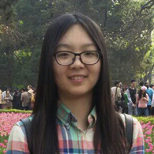

Past Winners
2014 Winner: Liu Xiaodong
"My name is Liu Xiaodong and I’m originally from Xi'an. I’m currently a sophomore at the School of Life Sciences and Technology of Xi’an Jiaotong University. I’m an officer in our Student Union, an editor of our school magazine 'Zones', and I both volunteer in the Academic Center and am a member of the General Affairs committee of my college within the University. I am also leading a research project devoted to improving the continuous and non-invasive measurement of blood pressure, by exploring the relationship between blood pressure and pulse waves with Android software. In addition to the Pipeline Scholarship, I have won the National Encouragement Scholarship, and the Title of Outstanding Student and the Outstanding Volunteer of Academic Counseling Center of Chungying College."
2014 Runner-up: Ma Yalei 
"My name is Ma Yalei and I’m from Zhengzhou, Henan. I’m studying biomedical engineering in Xi'an Jiaotong University. Last year I joined a laboratory and became an undergraduate experiment group leader. Outside the lab, I organized class meetings and set up class learning support groups. I’m engaged in various volunteer activities to reach out to the general public. Last year, I taught in Bayuan County Junior High School, and volunteered in Cherry blossom festival at the school. Before receiving this scholarship, I have won many awards, including outstanding student award and the Tang Zhongying Moral Education scholarship."